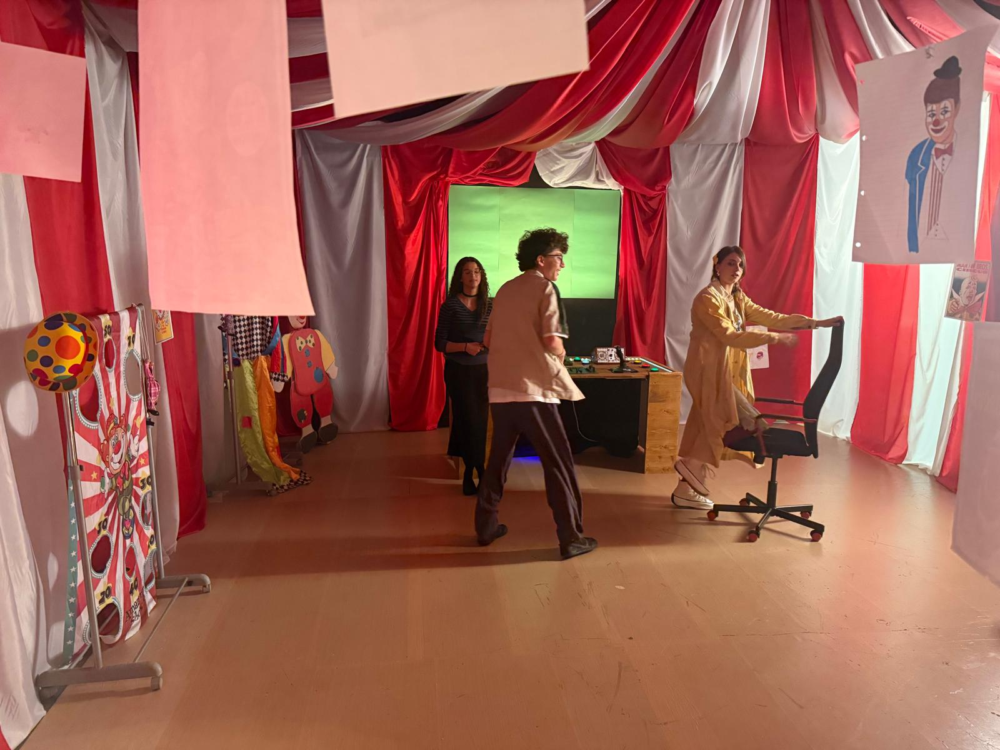
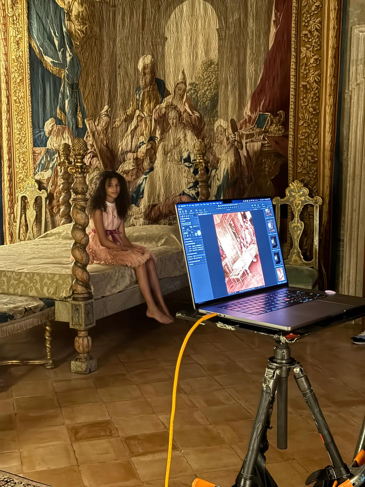

Un diario dedicato ai dietro le quinte, ai cortometraggi, alla fotografia e alle esperienze che accompagnano il mio percorso tra cinema, televisione e set.

Spettro – Un altro modo di pensare
Il dietro le quinte del cortometraggio dedicato al tema dell'autismo, nel quale interpreto Tristezza. Nel 2026 ha conquistato il 1° posto come miglior corto sulla disabilità al Caudium Film Festival.
1° posto · Caudium Film Festival 2026
Roma Codex – Dietro le quinte
Dalla chiamata dell'agenzia al set serale a Villa Medici: il racconto della mia esperienza per il progetto fotografico di Albert Watson.
Scopri il mio percorso artistico
Torna alla Home Page